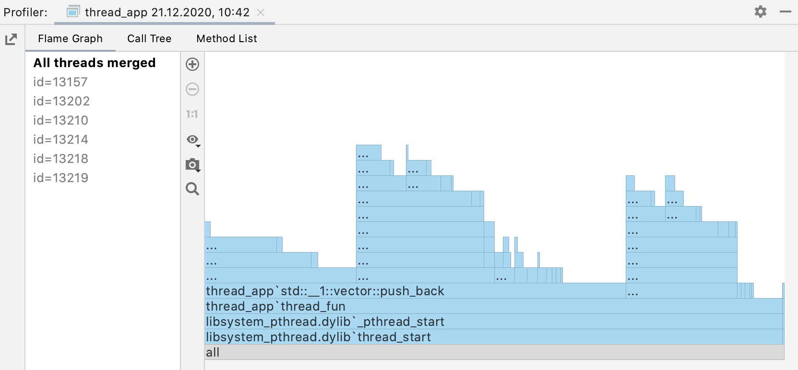

Memory Management
在程式語言中，通常會有記憶體管理 (memory management) 系統。在二進位作業系統中，記憶裝置（記憶體、硬碟、光碟、軟碟等等）只會儲存 0 和 1，並藉由這兩個「符號」的陣列來表示資料，因此可視為這些裝置都是一列很長的小格子組成。
要知道，記憶體管理系統僅為程式語言方便表達而設計。在真正的程式中，只會執行：
- 索取 (require)：索取記憶體，通常會執行初始化來清理前面使用過的資料（全部變為 0），但是也可以不清理。若記憶體不足會引發錯誤，作業系統可以延緩索取。
- 存放 (store)：儲存資料到記憶體位置。
- 載入 (load)：從記憶體位置拿取資料。
- 釋放 (release)：歸還記憶體，資料通常就丟著。
接下來進入主題。如下圖所示，在記憶體分析器中，每個矩形都可視為一個短暫的執行區，稱為 stack。水平方向為時間的流逝，由左開始執行，到右結束程式。對 stack 裡的資料來說，它們僅存在於水平方向的一小部分，從建立到刪除，稱為該資料的生命週期 (life cycle)。最底下的矩形圖形涵蓋了整個水平方向的部分，可以視為其記憶體在程式執行過程中都占用著，習慣上會用靜態 (static) 來稱呼之。不過靜態一詞可指稱跨度多個 stack 間的生命週期。

在這個框架之外，某些資料可能會需要客製化的生命週期。這時候這些資料可以散落到記憶體中，而非如 stack 通常是在差不多時間索取記憶體，這個執行區稱為 heap。由於記憶體安全問題，stack 被設定了一些限制，所以必須仰賴 heap 來繞過限制。
- 大小上限：由於通常會造成多項資料的建立，stack 被設定了大小上限，每種程式語言和不同作業系統框架下不一定相同。如 32 位元肯定比 64 位元限制更多，因為最多只有 4 GB 的裝置上限。
- 堆疊上限：在遞迴 (recursive) 的設計之下，相同模式的 stack 可以被連堆疊，造成連續的記憶體消耗，因此設定了堆疊上限。不同的程式語言上限也不同。
以下是一個 Rust 程式的 stack 範例：
#![allow(unused)] fn main() { let a = 10; { let b = 20; { let c = 30; println!("{}", c); } println!("{}", b); } println!("{}", a); }
Rust 可以使用大括弧 {} 隨時在程式碼中開啟一個 stack，使用 let 關鍵字聲明 (declare) 的變數代表其所在的 stack。如變數 a 是在最外面，變數 b 是在裏層的 stack 內，以此類推。這些變數都會在所在的 stack 關閉時被釋放，釋放後的變數將會不可使用。
可以注意到的是，堆疊的子層的生命週期會比疊在的父層還短，所以子層也可以載入父層變數的資料。Rust 中也允許聲明相同的變數名稱，不過只是遮擋 (shadow) 前面的變數，並不會影響之前變數的生命週期，但是會取代之後的名稱引用。
而在控制流程中，由於聲明在其中的變數較無法處理，因此通常會將控制流程的區塊也認為是 stack。如下面範例中的變數 i 只能在迴圈中使用，而且每一次重複執行都視為不同的 i，其他聲明在迴圈中的變數亦是如此。
#![allow(unused)] fn main() { for i in 0..10 { let a = i * i; println!("{}", a); } }